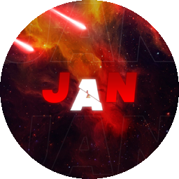

Bir bağlantı yapıştır, formatını seç ve indir.
İndirdiğin dosyalar burada.
Uygulamayı tercihlerine göre yapılandır.
Uygulama, geliştirici ve teknoloji bilgileri.

YouTube İndirici · açık kaynak · MIT lisansı altında dağıtılır.